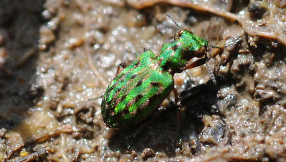

Common Name: Delta Green Ground Beetle
Scientific Name: Elaphrus viridis
Year listed as endangered: 1980
Reason(s): Loss of vernal pool habitats due to agriculture, as well as introduction of certain plant species
Lifespan: About 6 months, maybe more